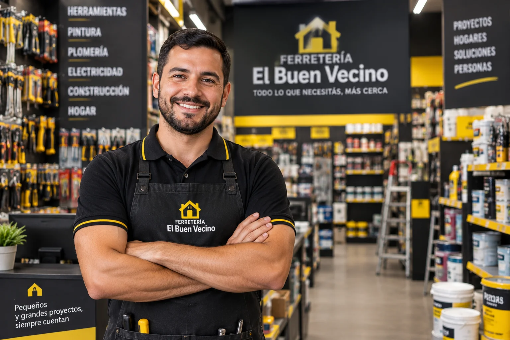
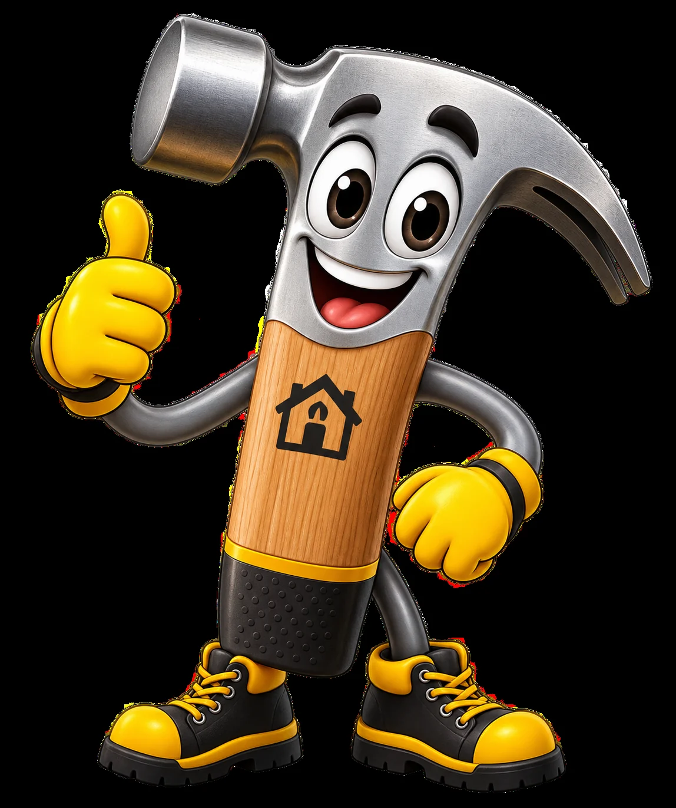

Una ferretería de barrio, hecha por vecinos
Historia ficticia — parte de la demo de Web Artesanal.
Cómo empezamos
Ferretería El Buen Vecino nació hace más de 15 años, cuando don Alfonso Vargas empezó a vender herramientas y materiales básicos desde un pequeño local cerca del parque de Esparza. Lo que comenzó como un puesto con apenas un par de estantes fue creciendo, producto adicional por producto adicional, gracias a los vecinos que volvían una y otra vez.
Hoy el negocio lo dirige su hijo, Rodrigo Vargas, quien creció entre tornillos y latas de pintura y aprendió del oficio ayudando a su padre desde niño. Rodrigo mantiene la misma idea con la que empezó todo: una ferretería no solo vende productos, también ayuda a resolver el problema que trae a cada cliente por la puerta.

Lo que nos representa
🤝 Cercanía
Conocemos a nuestros clientes por nombre, no por número de factura.
💬 Asesoría honesta
Le decimos lo que realmente necesita, no lo que nos deja más ganancia.
🔧 Calidad
Seleccionamos productos que funcionan de verdad, no solo los más baratos.
🏡 Compromiso con Esparza
Somos parte de esta comunidad, y trabajamos para que siga creciendo.

Pregúntele a Martillito
Cuéntele qué problema tiene o qué quiere hacer, y le ayuda a encontrar lo que necesita.